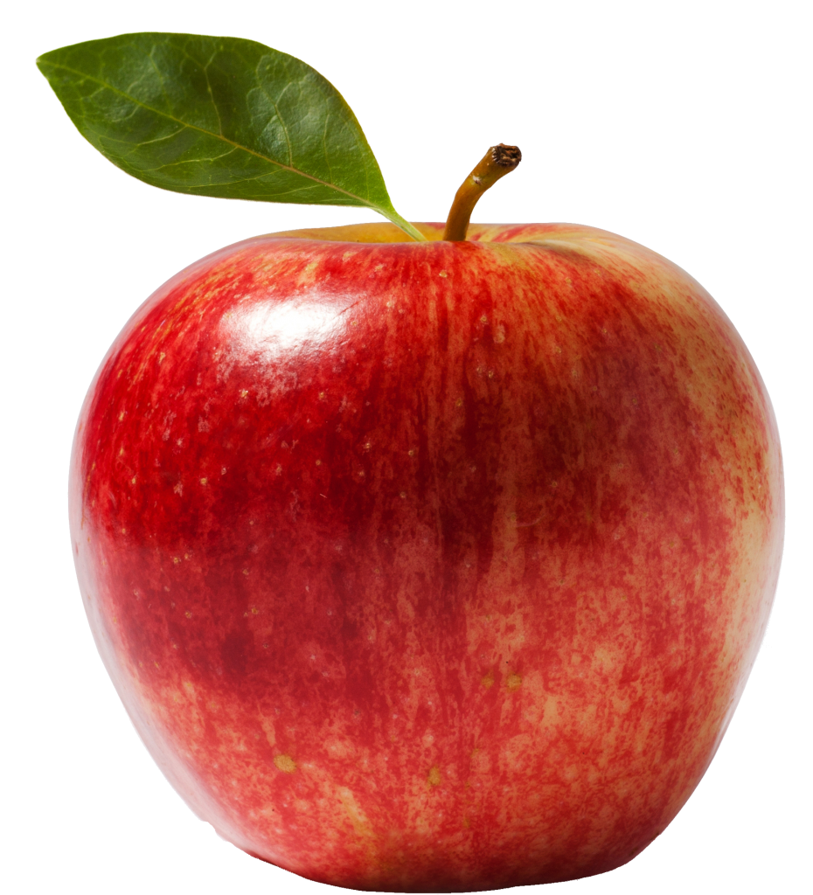

O que é uma fruta?
A fruta (ou fruto) é parte integrante de algumas plantas. É responsável por proteger e carregar as sementes e, por vezes, pode ser utilizada como alimento.
Apesar de ser um termo muitíssimo utilizado, a palavra “fruta”, na verdade, é uma designação não oficial, que significa “fruto de sabor adocicado”. Em outras palavras, “fruta” não existe no vocabulário botânico.
Popularmente, o que se entende por fruta é um alimento de origem vegetal, doce ou ligeiramente adocicado.

Algumas frutas
Maçã
- Vermelha ou verde
- Doce ou azeda
- Cresce em árvores
- Rica em fibras alimentares
Banana
- Amarela
- Doce
- Cresce em pseudocaules
- Rica em potássio
Uva

- Roxas, verdes, rosas ou vermelhas
- Doce ou azeda
- Cresce em trepadeiras
- Rica em Vitamina E